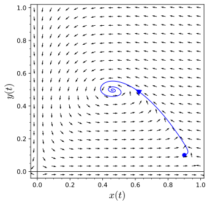

To understand that Hopf bifurcations; that is, bifurcations for systems parameterized by \(\alpha\text{,}\) occur if an attracting periodic solution encircling an equilibrium solution develops as \(\alpha\) passes through the bifurcation value.
we may see closed orbits and various types of equilibrium solutions. If we make a slight change in the system, then we might reasonably expect the phase portrait to change slightly. For example, a closed orbit might expand or contract, an equilibrium solution might shift, or a spiral source might tighten up, but we would not expect new equilibrium solutions to appear or a spiral source to turn into a spiral sink. However, this may be exactly what happens. If such a change occurs in the system through an adjustment of a parameter, we say a bifurcation has occurred.
Subsection5.4.1Bifurcations
The simplest bifurcations occur when an equilibrium solution appears, disappears, or splits into two or more equilibrium solutions. For example, the system
has no equilibrium solution if \(\alpha \gt 0\) (Figure 5.4.1). However, we have a single equilibrium solution at the origin if \(\alpha = 0\) and two equilibrium solutions, \((\pm \sqrt{-\alpha}, 0)\text{,}\) if \(\alpha \lt 0\text{.}\)
If \(\alpha = 0\text{,}\) then \(J\) has eigenvalues 0 and \(-1\text{.}\) This is not an elementary equilibrium point such a saddle, a sink, or a spiral source. We call this type of equilibrium solution a saddle-node. On the right half of the \(xy\)-plane, the equilibrium solution resembles a saddle, while on the left half it resembles a sink (Figure 5.4.2).
In the first case, we have a saddle since the eigenvalues are real and of opposite sign. In the second case, we have a nodal sink, since both eigenvalues are negative. The two equilibrium solutions move in opposite directions as \(\alpha\) decreases. We can summarize what happens for various values of \(\alpha\) with a bifurcation diagram such as the one in Figure 5.4.3.
Figure5.4.3.Bifurcation diagram
Subsection5.4.2The Hopf Bifurcation
Now let us consider an entirely different type of bifurcation by examining the system
The origin is an equilibrium solution for all values of \(\alpha\text{.}\) The linearization of our system is
\begin{align*}
\frac{dx}{dt} & = \alpha x + 5y\\
\frac{dy}{dt} & = -5x + \alpha y.
\end{align*}
Since the eigenvalues of this system are \(\alpha \pm 5i\text{,}\) we can easily determine the nature of of our linearization. If \(\alpha \lt 0\text{,}\) we have a spiral sink. As \(\alpha\) moves from negative values to positive values, the origin changes to a center (\(\alpha = 0\)), and then to a spiral source (\(\alpha \gt 0\)).
In the case of the nonlinear system, the origin is still a spiral sink for \(\alpha \gt 0\) (Figure 5.4.4). If \(\alpha \gt 0\text{,}\) the origin is still a spiral source (Figure 5.4.5). However, something quite different happens at \(\alpha = 0\text{.}\) The origin is stable equilibrium solution with solutions spiraling into the origin very slowly. As \(\alpha\) increases past zero, the equilibrium solution destabilizes and becomes a source. In addition, a closed orbit of radius \(\sqrt{\alpha}\) develops. Solutions inside of this closed orbit spiral out towards the orbit, while solutions outside of the orbit spiral inward (Figure 5.4.6).
Figure5.4.4.Solutions for \(\alpha \lt 0\)Figure5.4.5.Solutions for \(\alpha = 0\)
Figure5.4.6.Solutions for \(\alpha \gt 0\)
To see exactly what happens as \(\alpha\) passes zero and becomes positive, we will rewrite our system in polar coordinates. If we make the substitution \(x = r \cos \theta\) and \(y = r \sin \theta\text{,}\) our nonlinear system can be rewritten as
If \(\alpha \lt 0\text{,}\) the origin is a sink since \(\alpha r - r^3 \lt 0\) for all \(r \gt 0\text{.}\) In this case all solutions tend towards the origin as \(t \to \infty\text{.}\) When \(\alpha \gt 0\text{,}\) the origin is still an equilibrium solution. Moreover, \(r' = 0\text{,}\) when \(r = \sqrt{\alpha}\text{.}\) We also know that \(r' \gt 0\) for \(0 \lt r \lt \sqrt{\alpha}\) and \(r' \lt 0\) if \(r \gt \sqrt{\alpha}\text{.}\) So the circle of radius \(\sqrt{\alpha}\) is a periodic solution with the trajectory moving clockwise since \(\theta' = -5 \lt 0\text{.}\) All nonzero solutions spiral towards this orbit as \(t \to \infty\text{.}\) This type of bifurcation is called a Hopf bifurcation. No new equilibrium solutions arise, but a periodic solution develops as \(\alpha\) passes through the bifurcation value.
Theorem5.4.7.Hopf Bifurcation.
Suppose that \((x_0(\alpha), y_0(\alpha))\) is a equilibrium solution for the family of systems
parameterized by \(\alpha\text{,}\) and the Jacobian matrix for the system evaluated at this equilibrium has eigenvalues \(a(\alpha) \pm i b(\alpha)\text{.}\) Assume that at some \(\alpha = \alpha_0\text{,}\) we have \(a(\alpha_0) = 0\text{,}\)\(a'(\alpha_0) \gt 0\text{,}\)\(b(\alpha_0) \neq 0\text{,}\) and that the equilibrium point is asymptotically stable. Then there exists an \(\alpha_1\) such that the system has a periodic solution encircling the equilibrium solution for \(\alpha_0 \lt \alpha \lt \alpha_1\text{.}\) 1 
has an equilibrium at \((0, 0)\) with eigenvalues \(\alpha \pm 5i\text{.}\) If we let \(\alpha_0 = 0\text{,}\) then \(a(0) = 0\text{,}\)\(a'(0) = 1\text{,}\) and \(b(0) = 5\text{.}\) Thus, the hypothesis of the Hopf Bifurcation Theorem are satisfied and we are guaranteed a period solution surrounding our equilibrium solution.
Van der Pol's equation, a simple nonlinear equation having applications in electrical engineering and mathematical biology, is \(x'' - x(1 - x^2)x' + x = 0\text{.}\) This equation can be written as the system
The phase portrait for Van der Pol's equation is given in Figure 5.4.9. The origin is the only equilibrium solution to Van der Pol's equation, and one might guess that this solution acts like a spiral source by examining the phase portrait. If we examine the system consisting of only linear terms on the right-hand side of the equation,
\begin{align*}
\frac{dx}{dt} \amp = y\\
\frac{dy}{dt} \amp = - x + y
\end{align*}
we might get a better sense of what is happening. The matrix for this linear system,
has eigenvalues \(\lambda = (1 \pm i\sqrt{3})/2\text{.}\) This suggests that the origin looks like a spiral source at least locally. Indeed, the Jacobian matrix for (5.4.1)–(5.4.1) is
which agrees with \(A\) for \((x_0, y_0) = (0,0)\text{.}\)
Figure5.4.9.Van der Pol's equation
Let us examine how a bifurcation might occur in a predator-prey model. In our model, we will assume that a predator's appetite is satiated when food is abundant. If this is the case, an increase in the prey population has little effect on the interaction terms in our model. We might model this satiable predator-prey scenario by the equations
where \(x(t)\) is the prey population at time \(t\) and \(y(t)\) is the predator population at time \(t\text{.}\) Here, \(a, \ldots, f\) and \(\alpha\) are constants. Let us choose the constants \(a, \ldots, f\) so that our system becomes
The constant \(\alpha\) is know as the satiation constant. The larger the value of \(\alpha\text{,}\) the more quickly a predator's appetite is satiated as the prey population increases.
Let us see examine the phase portrait for several values of \(\alpha\text{.}\) If \(\alpha = 0\text{,}\) then there is no satiation effect. In this case, all trajectories inside the population quadrant spiral asymptotically towards a single stable equilibrium point (Figure 5.4.10). If \(\alpha = 1.35\text{,}\) we have a very similar phase portrait with solutions spiraling in towards a stable equilibrium solution (Figure 5.4.11). However, if \(\alpha = 0.9\text{,}\) we have a periodic trajectory. All other trajectories are pulled toward this attracting periodic orbit (Figure 5.4.12).
Figure5.4.10.Predator-prey model with \(\alpha = 0\)

Figure5.4.11.Predator-prey model with \(\alpha = 1.35\)Figure5.4.12.Predator-prey model with \(\alpha = 0.9\)Figure5.4.13.Bifurcation diagram for the satiable predator-prey model
As \(\alpha\) continues to increase a Hopf bifurcation occurs at \(\alpha \approx 0.5\text{.}\) At this point the equilibrium solution destabilizes and spawns an attracting periodic orbit. As \(\alpha\) continues to increase, the amplitude of this periodic orbit increases. However, at \(\alpha \approx 0.85\text{,}\) the amplitude of the periodic solution begins to decrease. At \(\alpha \approx 1.2\text{,}\) the equilibrium point re-stabilizes and the periodic solution is absorbed. For \(\alpha > 1.2\text{,}\) we only have a stable equilibrium solution in the first quadrant. The \(x\)-coordinate of our equilibrium solution is
\begin{equation*}
x = \frac{0.15}{1 - 0.5 \alpha},
\end{equation*}
and we can summarize our findings with a bifurcation diagram (Figure 5.4.13).
Subsection5.4.3Important Lessons
If we make a slight change in the system, then we might reasonably expect the phase portrait to change slightly. For example, a closed orbit might expand or contract, an equilibrium solution might shift, or a spiral source might tighten up, but we would not expect new equilibrium solutions to appear or a spiral source to turn into a spiral sink. However, this may be exactly what happens. If such a change occurs in the system through an adjustment of a parameter, we say a bifurcation has occurred.
A Hopf bifurcation if an attracting periodic solution encircling an equilibrium solution develops as \(\alpha\) passes through the bifurcation value.
Suppose that \((x_0(\alpha), y_0(\alpha))\) is a equilibrium solution for the family of systems
parameterized by \(\alpha\text{,}\) and the Jacobian matrix for the system evaluated at this equilibrium has eigenvalues \(a(\alpha) \pm i b(\alpha)\text{.}\) Assume that at some \(\alpha = \alpha_0\text{,}\) we have \(a(\alpha_0) = 0\text{,}\)\(a'(\alpha_0) \gt 0\text{,}\)\(b(\alpha_0) \neq 0\text{,}\) and that the equilibrium point is asymptotically stable. Then there exists an \(\alpha_1\) such that the system has a periodic solution encircling the equilibrium solution for \(\alpha_0 \lt \alpha \lt \alpha_1\text{.}\)
A satiable predator-prey scenario can be modeled by the equations
where \(x(t)\) is the prey population at time \(t\) and \(y(t)\) is the predator population at time \(t\text{.}\) Here, \(a, \ldots, f\) and \(\alpha\) are constants. The constant \(\alpha\) is know as the satiation constant. The larger the value of \(\alpha\text{,}\) the more quickly a predator's appetite is satiated as the prey population increases.
Reading Questions5.4.4Reading Questions
1.
Explain what a Hopf bifurcation is.
2.
What scenerio does a satiated predator-prey model describe? Explain.
has an asymptotically stable equilibrium solution at \((x, y) = (0, 0)\text{.}\)
For a proof and description of the Hopf Bifurcation Theorem see C. Chicone. Ordinary Differential Equations with Applications. Springer-Verlag, New York, 1999.